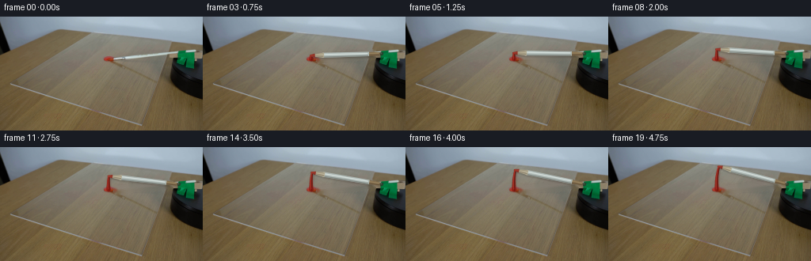
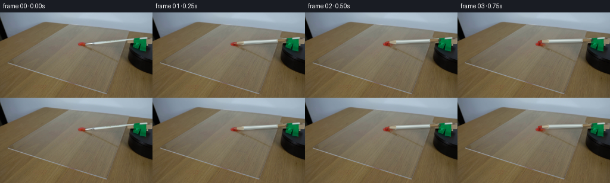

CODING AGENTS AS PIXEL WORLD MODELS
traex/GPT-5.6-Sol · 0132
点击播放 · 原生 RGB 像素
逐轮保存的候选
回放视频、检查图与代码变化。
每份候选均可单独播放。实际图片检查记录在下方工具轨迹中。
候选 01播放与检查图
点击播放 · 原生 RGB 像素


展开代码变化
--- 上一保存版本
+++ 本次保存版本
@@ -0,0 +1,205 @@
+"""Generate a locked-off scientific demonstration of a rotating paintbrush.
+
+All geometry is inferred from first_frame.png. The photograph itself supplies the
+background and the first frame; subsequent frames use only analytic 2-D rotation,
+local in-painting, and antialiased drawing.
+"""
+from pathlib import Path
+import math
+import cv2
+import numpy as np
+from PIL import Image
+import artifact_io
+
+HERE = Path(__file__).resolve().parent
+S = 4 # supersampling for clean subpixel motion
+H, W = 144, 256
+
+
+def alpha_over(dst, rgb, alpha):
+ """Alpha composite a solid RGB colour over a uint8 RGB image."""
+ a = np.clip(alpha, 0.0, 1.0)[..., None]
+ return np.clip(dst.astype(np.float32) * (1.0-a) + np.asarray(rgb, np.float32) * a,
+ 0, 255).astype(np.uint8)
+
+
+def down(mask_hi):
+ return cv2.resize(mask_hi, (W, H), interpolation=cv2.INTER_AREA).astype(np.float32) / 255.0
+
+
+def pt(p):
+ return tuple(np.round(np.asarray(p) * S).astype(int))
+
+
+def polygon_mask(points):
+ m = np.zeros((H*S, W*S), np.uint8)
+ cv2.fillConvexPoly(m, np.array([pt(q) for q in points], np.int32), 255, cv2.LINE_AA)
+ return m
+
+
+def strip_polygon(pivot, u, n, d0, d1, w0, w1):
+ a = pivot + u*d0
+ b = pivot + u*d1
+ return [a+n*w0, b+n*w1, b-n*w1, a-n*w0]
+
+
+def make_clean_background(first):
+ # The original shaft is the thin pale diagonal from the red paint to the
+ # motor. Remove only that shaft. The red pixels and fixed motor collar are
+ # deliberately protected.
+ mask = np.zeros((H, W), np.uint8)
+ cv2.line(mask, (146, 54), (217, 46), 255, 8, cv2.LINE_AA)
+ yy, xx = np.indices((H, W))
+ r, g, b = [first[..., i].astype(np.int16) for i in range(3)]
+ red = (r > 105) & (r > g*1.28) & (r > b*1.34) & (xx < 151)
+ mask[red] = 0
+ # Preserve the fixed green spindle and the dark platform.
+ mask[:, 219:] = 0
+ return cv2.inpaint(first, mask, 3, cv2.INPAINT_TELEA)
+
+
+def paint_stroke(frame, pivot, theta0, theta):
+ """Lay down the persistent wet red arc swept out by the brush tip."""
+ if theta <= theta0 + 1e-5:
+ return frame
+ # Paint continues from the dollop, thinning naturally as the bristles unload.
+ ang = np.linspace(theta0, theta, max(5, int((theta-theta0)*180/math.pi*2.1)+2))
+ radius = 89.1
+ path = np.stack((pivot[0] + radius*np.cos(ang),
+ pivot[1] + radius*np.sin(ang)), axis=1)
+
+ # A soft wet-paint contact shadow.
+ shadow_hi = np.zeros((H*S, W*S), np.uint8)
+ pshadow = np.round((path + np.array([0.7, 1.1]))*S).astype(np.int32)
+ cv2.polylines(shadow_hi, [pshadow], False, 155, 5*S, cv2.LINE_AA)
+ sh = cv2.GaussianBlur(down(shadow_hi), (0, 0), 0.65)
+ frame = alpha_over(frame, (55, 20, 12), sh*0.28)
+
+ # Build the body segment by segment so that it tapers from the dollop.
+ body_hi = np.zeros((H*S, W*S), np.uint8)
+ for k in range(len(path)-1):
+ f = k/max(1, len(path)-2)
+ width = max(1.25, 4.8 - 3.05*f)
+ cv2.line(body_hi, pt(path[k]), pt(path[k+1]), 235,
+ max(2, round(width*S)), cv2.LINE_AA)
+ frame = alpha_over(frame, (139, 28, 20), down(body_hi)*0.93)
+
+ # Dark lower ridge and a glossy vermilion highlight give the paint volume.
+ ridge_hi = np.zeros_like(body_hi)
+ hi_hi = np.zeros_like(body_hi)
+ lower = path + np.array([0.7, 1.0])
+ upper = path + np.array([-0.45, -0.65])
+ cv2.polylines(ridge_hi, [np.round(lower*S).astype(np.int32)], False, 210, 1*S, cv2.LINE_AA)
+ cv2.polylines(hi_hi, [np.round(upper*S).astype(np.int32)], False, 190, 1*S, cv2.LINE_AA)
+ frame = alpha_over(frame, (82, 17, 12), down(ridge_hi)*0.65)
+ frame = alpha_over(frame, (213, 69, 52), down(hi_hi)*0.50)
+
+ # Irregular tiny streaks, deterministic and attached to the swept path.
+ if len(path) > 8:
+ strand = path[3:] + np.array([1.05, -0.3])
+ sm = np.zeros_like(body_hi)
+ cv2.polylines(sm, [np.round(strand*S).astype(np.int32)], False, 135, 1*S, cv2.LINE_AA)
+ frame = alpha_over(frame, (111, 24, 17), down(sm)*0.45)
+ return frame
+
+
+def draw_brush(frame, pivot, theta, theta0):
+ """Render the arm/brush as a shallow object resting above the acrylic."""
+ u = np.array([math.cos(theta), math.sin(theta)], np.float64)
+ n = np.array([-u[1], u[0]], np.float64)
+
+ # Contact shadow from all brush parts, offset down/right on the sheet.
+ sh_hi = np.zeros((H*S, W*S), np.uint8)
+ polys = [
+ strip_polygon(pivot, u, n, 2, 18, 2.0, 2.5),
+ strip_polygon(pivot, u, n, 16, 75, 2.6, 3.0),
+ strip_polygon(pivot, u, n, 73, 90, 3.15, 0.75),
+ ]
+ off = np.array([1.25, 2.0])
+ for poly in polys:
+ cv2.fillConvexPoly(sh_hi, np.array([pt(q+off) for q in poly], np.int32), 180, cv2.LINE_AA)
+ sh = cv2.GaussianBlur(down(sh_hi), (0, 0), 1.05)
+ frame = alpha_over(frame, (35, 28, 20), sh*0.34)
+
+ # Warm wood at the attachment end.
+ wood = down(polygon_mask(strip_polygon(pivot, u, n, 2, 18, 1.9, 2.55)))
+ frame = alpha_over(frame, (132, 111, 79), wood*0.96)
+ edge_hi = np.zeros((H*S, W*S), np.uint8)
+ cv2.line(edge_hi, pt(pivot+u*3-n*1.25), pt(pivot+u*18-n*1.6), 210, 1*S, cv2.LINE_AA)
+ frame = alpha_over(frame, (78, 62, 43), down(edge_hi)*0.62)
+ whi = np.zeros_like(edge_hi)
+ cv2.line(whi, pt(pivot+u*4+n*0.65), pt(pivot+u*17+n*0.8), 180, 1*S, cv2.LINE_AA)
+ frame = alpha_over(frame, (184, 160, 115), down(whi)*0.45)
+
+ # Long pale metal ferrule/shaft. Several longitudinal tones mimic the
+ # photographed specular strip instead of a flat synthetic bar.
+ metal = down(polygon_mask(strip_polygon(pivot, u, n, 16, 75, 2.6, 3.05)))
+ frame = alpha_over(frame, (174, 185, 181), metal*0.98)
+ dark_hi = np.zeros_like(edge_hi)
+ cv2.line(dark_hi, pt(pivot+u*17-n*2.05), pt(pivot+u*74-n*2.35), 225, 1*S, cv2.LINE_AA)
+ frame = alpha_over(frame, (103, 106, 99), down(dark_hi)*0.68)
+ light_hi = np.zeros_like(edge_hi)
+ cv2.line(light_hi, pt(pivot+u*18+n*0.85), pt(pivot+u*73+n*1.0), 235, 1*S, cv2.LINE_AA)
+ frame = alpha_over(frame, (226, 235, 232), down(light_hi)*0.88)
+ core_hi = np.zeros_like(edge_hi)
+ cv2.line(core_hi, pt(pivot+u*20+n*0.05), pt(pivot+u*72+n*0.10), 110, 1*S, cv2.LINE_AA)
+ frame = alpha_over(frame, (197, 207, 203), down(core_hi)*0.55)
+
+ # Tapered natural bristles. The tip becomes red immediately after contact.
+ bristle = down(polygon_mask(strip_polygon(pivot, u, n, 73, 90.0, 3.15, 0.65)))
+ frame = alpha_over(frame, (177, 169, 145), bristle*0.98)
+ # fine bristle strands
+ for offs, col, al in [(-1.25, (104, 91, 68), .62),
+ (0.55, (220, 211, 183), .62),
+ (1.65, (125, 111, 83), .42)]:
+ m = np.zeros_like(edge_hi)
+ cv2.line(m, pt(pivot+u*74+n*offs), pt(pivot+u*89+n*offs*.18), 190, S, cv2.LINE_AA)
+ frame = alpha_over(frame, col, down(m)*al)
+
+ # Wet red paint clings to the last few millimetres. It is subtle in the
+ # first instant and fully loaded once the brush has crossed the dollop.
+ travel_deg = max(0.0, (theta-theta0)*180/math.pi)
+ loaded = min(1.0, 0.25 + travel_deg/3.2)
+ tip_poly = strip_polygon(pivot, u, n, 84.5, 90.7, 2.15, 0.55)
+ tm = down(polygon_mask(tip_poly))
+ frame = alpha_over(frame, (137, 30, 21), tm*(0.82*loaded))
+ tip_hi = np.zeros_like(edge_hi)
+ cv2.line(tip_hi, pt(pivot+u*86+n*.45), pt(pivot+u*90), 175, S, cv2.LINE_AA)
+ frame = alpha_over(frame, (210, 66, 48), down(tip_hi)*(0.45*loaded))
+
+ # Small fixed-looking axle cap at the exact attachment point, drawn last.
+ cap_hi = np.zeros_like(edge_hi)
+ cv2.circle(cap_hi, pt(pivot), round(2.25*S), 230, -1, cv2.LINE_AA)
+ frame = alpha_over(frame, (48, 48, 39), down(cap_hi)*0.75)
+ cap_glint = np.zeros_like(edge_hi)
+ cv2.circle(cap_glint, pt(pivot+np.array([-.55, -.55])), max(1, round(.65*S)), 180, -1, cv2.LINE_AA)
+ frame = alpha_over(frame, (137, 143, 124), down(cap_glint)*0.50)
+ return frame
+
+
+def generate():
+ first = np.asarray(Image.open(HERE/'first_frame.png').convert('RGB'), dtype=np.uint8)
+ assert first.shape == (H, W, 3)
+ clean = make_clean_background(first)
+
+ # Spindle at the upper edge of the black platform; the original brush tip is
+ # centered in the red dollop. Positive screen-space angle is clockwise.
+ pivot = np.array([225.8, 46.8], np.float64)
+ theta0 = math.atan2(53.7-pivot[1], 137.0-pivot[0])
+ total = math.radians(19.0)
+
+ frames = [first.copy()]
+ for i in range(1, 20):
+ theta = theta0 + total*(i/19.0) # uniform real-time angular velocity
+ fr = clean.copy()
+ fr = paint_stroke(fr, pivot, theta0, theta)
+ fr = draw_brush(fr, pivot, theta, theta0)
+ frames.append(fr)
+ frames = np.stack(frames).astype(np.uint8)
+ # Contract-critical exactness check.
+ assert np.array_equal(frames[0], first)
+ artifact_io.save(frames, HERE)
+
+
+if __name__ == '__main__':
+ generate()
可观测工具轨迹
实际执行的命令与返回图片。
命令 1exit 0
/bin/bash -lc "cat GENERATION_RULES.md && printf '\\n---PROMPT---\\n' && cat prompt.txt"
命令 2exit 127
/bin/bash -lc "find . -maxdepth 2 -type f -printf '%p %s bytes\\n' | sort && file first_frame.png"
命令 3exit 0
/bin/bash -lc "python3 - <<'PY'
from PIL import Image
import numpy as np
im=np.array(Image.open('first_frame.png').convert('RGB'))
print(im.shape, im.dtype, im.min(), im.max())
print('corners', im[0,0],im[0,-1],im[-1,0],im[-1,-1])
# row/column mean and std samples
for y in range(0,144,12):
print('row',y,'mean',np.round(im[y].mean(0),1),'std',np.round(im[y].std(0),1),'lum',np.round((im[y]@[.299,.587,.114]).mean(),1))
print('columns')
for x in range(0,256,16):
print(x,np.round(im[:,x].mean(0),1),np.round(im[:,x].std(0),1))
# top colors quantized 16
q=(im//16)*16
u,c=np.unique(q.reshape(-1,3),axis=0,return_counts=True)
for i in np.argsort(c)[-30:][::-1]:print(tuple(u[i]),c[i])
PY"命令 4exit 0
/bin/bash -lc "python3 - <<'PY'
from PIL import Image
import numpy as np
from scipy import ndimage as ndi
im=np.array(Image.open('first_frame.png').convert('RGB'))
R,G,B=im.transpose(2,0,1)
conds={
'red':(R>G*1.25)&(R>B*1.3)&(R>70),
'black':(R<40)&(G<40)&(B<40),
'dark':(R+G+B<100),
'blue':(B>R*1.25)&(B>G*1.08)&(B>60),
'white':(R>190)&(G>190)&(B>190),
'cyan':(G>R*1.12)&(B>R*1.12)&(G>80),
}
for name,m in conds.items():
print('\\n',name,'N',m.sum(),'bbox',np.where(m)[1].min() if m.any() else None,np.where(m)[0].min() if m.any() else None,np.where(m)[1].max() if m.any() else None,np.where(m)[0].max() if m.any() else None)
lab,n=ndi.label(m)
oo=[]
for i in range(1,n+1):
yy,xx=np.where(lab==i); s=len(xx)
if s>=3:oo.append((s,(xx.min(),yy.min(),xx.max(),yy.max()),(round(xx.mean(),1),round(yy.mean(),1))))
print(sorted(oo,reverse=True)[:20])
# darkest coordinate hist
for name,m in [('black',conds['black']),('red',conds['red'])]:
ys=m.sum(1); xs=m.sum(0)
print(name,'yhist',[(i,int(v)) for i,v in enumerate(ys) if v>3])
print(name,'xhist',[(i,int(v)) for i,v in enumerate(xs) if v>3])
PY"命令 5exit 0
/bin/bash -lc "python3 - <<'PY'
from PIL import Image
import numpy as np
im=np.array(Image.open('first_frame.png').convert('RGB'))
# classify and print 2x2 dominant/manual
chars=' .:-=+*#%@'
def show(x0,y0,x1,y1,sx=2,sy=2):
for y in range(y0,y1,sy):
line=''
for x in range(x0,x1,sx):
a=im[y:min(y+sy,144),x:min(x+sx,256)].mean((0,1)); r,g,b=a
lum=a@[.299,.587,.114]
if r>1.35*g and r>1.4*b and r>70: c='R'
elif b>1.25*r and b>1.1*g and b>70:c='B'
elif g>1.2*r and g>b*0.9 and g>70:c='C'
elif max(a)<35:c='X'
elif max(a)<65:c='x'
elif min(a)>190:c='W'
else:c=chars[min(9,int(lum)//26)]
line+=c
print(line)
print('right setup x100-256 y25-115 scale2')
show(100,25,256,115,2,2)
print('full scale4')
show(0,0,256,144,4,4)
PY"命令 6exit 0
/bin/bash -lc "python3 - <<'PY'
import cv2, numpy as np
im=cv2.imread('first_frame.png')
g=cv2.cvtColor(im,cv2.COLOR_BGR2GRAY)
e=cv2.Canny(g,40,100)
lines=cv2.HoughLinesP(e,1,np.pi/720,threshold=18,minLineLength=15,maxLineGap=4)
for l in sorted(lines[:,0].tolist(),key=lambda q:-np.hypot(q[2]-q[0],q[3]-q[1]))[:80]:
x1,y1,x2,y2=l
print(l,'len',round(np.hypot(x2-x1,y2-y1),1),'ang',round(np.degrees(np.arctan2(y2-y1,x2-x1)),1))
PY"命令 7exit 0
/bin/bash -lc "python3 - <<'PY'
from PIL import Image
import numpy as np
im=np.array(Image.open('first_frame.png').convert('RGB'))
# Print pixels in region 125:225,42:62 subsampled exactly via color semantic
for y in range(40,66):
line=''
for x in range(120,226):
r,g,b=im[y,x]
if r>160 and g>160 and b>160:c='W'
elif r>1.35*g and r>1.4*b and r>70:c='R'
elif max(r,g,b)<30:c='X'
elif max(r,g,b)<60:c='x'
elif b>1.2*r and g>1.1*r:c='C'
elif max(r,g,b)-min(r,g,b)<18 and sum((int(r),int(g),int(b)))>360:c='s'
else:
lum=(int(r)+int(g)+int(b))/3
c='.' if lum<90 else '-' if lum<120 else '=' if lum<150 else '+' if lum<180 else '*'
line+=c
print(f'{y:03}',line)
# vertical exact values in brush candidates each 5
for y in range(44,61,2):
print('y',y, [(x,tuple(im[y,x])) for x in range(125,226,5)])
PY"命令 8exit 0
/bin/bash -lc "python3 - <<'PY'
import cv2,numpy as np
im=cv2.cvtColor(cv2.imread('first_frame.png'),cv2.COLOR_BGR2RGB)
Y=im.mean(2); sat=im.max(2)-im.min(2)
m=(Y>145)&(sat<35)
# region only
m[:35]=0;m[65:]=0;m[:,:115]=0;m[:,226:]=0
n,lab,st,cen=cv2.connectedComponentsWithStats(m.astype('uint8'))
for i in range(1,n):
if st[i,4]>2: print(i,st[i].tolist(),cen[i])
# per x bright yrange
for x in range(120,226):
ys=np.where(m[:,x])[0]
if len(ys):print(x,ys.min(),ys.max(),len(ys),round(Y[ys,x].mean()))
PY"命令 9exit 0
/bin/bash -lc "sed -n '1,240p' artifact_io.py"
命令 10exit 0
/bin/bash -lc "python3 - <<'PY'
from PIL import Image
import numpy as np
im=np.array(Image.open('first_frame.png').convert('RGB'))
# 2x2 avg RGB labels in x210:252 y35:72
for y in range(35,72,2):
print(f'{y:2}',end=' ')
for x in range(208,254,2):
a=im[y:y+2,x:x+2].mean((0,1));r,g,b=a
if max(a)<30:s='K'
elif max(a)<65:s='k'
elif g>r*1.5 and g>b*1.25:s='G'
elif g>r*1.2 and g>b*1.05:s='g'
elif b>r*1.3 and b>g*1.15:s='B'
elif min(a)>175:s='W'
elif min(a)>145:s='w'
elif r>g*1.25 and r>b*1.3:s='R'
elif r>g*1.18 and g>b*1.1:s='o'
else:s='.'
print(s,end='')
print()
print('samples')
for y in [40,44,48,52,56,60,64,68]:
print(y,[(x,tuple(im[y,x])) for x in range(210,251,4)])
PY"命令 11exit 0
/bin/bash -lc "cat > generate.py <<'PY'
\"\"\"Generate a locked-off scientific demonstration of a rotating paintbrush.
All geometry is inferred from first_frame.png. The photograph itself supplies the
background and the first frame; subsequent frames use only analytic 2-D rotation,
local in-painting, and antialiased drawing.
\"\"\"
from pathlib import Path
import math
import cv2
import numpy as np
from PIL import Image
import artifact_io
HERE = Path(__file__).resolve().parent
S = 4 # supersampling for clean subpixel motion
H, W = 144, 256
def alpha_over(dst, rgb, alpha):
\"\"\"Alpha composite a solid RGB colour over a uint8 RGB image.\"\"\"
a = np.clip(alpha, 0.0, 1.0)[..., None]
return np.clip(dst.astype(np.float32) * (1.0-a) + np.asarray(rgb, np.float32) * a,
0, 255).astype(np.uint8)
def down(mask_hi):
return cv2.resize(mask_hi, (W, H), interpolation=cv2.INTER_AREA).astype(np.float32) / 255.0
def pt(p):
return tuple(np.round(np.asarray(p) * S).astype(int))
def polygon_mask(points):
m = np.zeros((H*S, W*S), np.uint8)
cv2.fillConvexPoly(m, np.array([pt(q) for q in points], np.int32), 255, cv2.LINE_AA)
return m
def strip_polygon(pivot, u, n, d0, d1, w0, w1):
a = pivot + u*d0
b = pivot + u*d1
return [a+n*w0, b+n*w1, b-n*w1, a-n*w0]
def make_clean_background(first):
# The original shaft is the thin pale diagonal from the red paint to the
# motor. Remove only that shaft. The red pixels and fixed motor collar are
# deliberately protected.
mask = np.zeros((H, W), np.uint8)
cv2.line(mask, (146, 54), (217, 46), 255, 8, cv2.LINE_AA)
yy, xx = np.indices((H, W))
r, g, b = [first[..., i].astype(np.int16) for i in range(3)]
red = (r > 105) & (r > g*1.28) & (r > b*1.34) & (xx < 151)
mask[red] = 0
# Preserve the fixed green spindle and the dark platform.
mask[:, 219:] = 0
return cv2.inpaint(first, mask, 3, cv2.INPAINT_TELEA)
def paint_stroke(frame, pivot, theta0, theta):
\"\"\"Lay down the persistent wet red arc swept out by the brush tip.\"\"\"
if theta <= theta0 + 1e-5:
return frame
# Paint continues from the dollop, thinning naturally as the bristles unload.
ang = np.linspace(theta0, theta, max(5, int((theta-theta0)*180/math.pi*2.1)+2))
radius = 89.1
path = np.stack((pivot[0] + radius*np.cos(ang),
pivot[1] + radius*np.sin(ang)), axis=1)
# A soft wet-paint contact shadow.
shadow_hi = np.zeros((H*S, W*S), np.uint8)
pshadow = np.round((path + np.array([0.7, 1.1]))*S).astype(np.int32)
cv2.polylines(shadow_hi, [pshadow], False, 155, 5*S, cv2.LINE_AA)
sh = cv2.GaussianBlur(down(shadow_hi), (0, 0), 0.65)
frame = alpha_over(frame, (55, 20, 12), sh*0.28)
# Build the body segment by segment so that it tapers from the dollop.
body_hi = np.zeros((H*S, W*S), np.uint8)
for k in range(len(path)-1):
f = k/max(1, len(path)-2)
width = max(1.25, 4.8 - 3.05*f)
cv2.line(body_hi, pt(path[k]), pt(path[k+1]), 235,
max(2, round(width*S)), cv2.LINE_AA)
frame = alpha_over(frame, (139, 28, 20), down(body_hi)*0.93)
# Dark lower ridge and a glossy vermilion highlight give the paint volume.
ridge_hi = np.zeros_like(body_hi)
hi_hi = np.zeros_like(body_hi)
lower = path + np.array([0.7, 1.0])
upper = path + np.array([-0.45, -0.65])
cv2.polylines(ridge_hi, [np.round(lower*S).astype(np.int32)], False, 210, 1*S, cv2.LINE_AA)
cv2.polylines(hi_hi, [np.round(upper*S).astype(np.int32)], False, 190, 1*S, cv2.LINE_AA)
frame = alpha_over(frame, (82, 17, 12), down(ridge_hi)*0.65)
frame = alpha_over(frame, (213, 69, 52), down(hi_hi)*0.50)
# Irregular tiny streaks, deterministic and attached to the swept path.
if len(path) > 8:
strand = path[3:] + np.array([1.05, -0.3])
sm = np.zeros_like(body_hi)
cv2.polylines(sm, [np.round(strand*S).astype(np.int32)], False, 135, 1*S, cv2.LINE_AA)
frame = alpha_over(frame, (111, 24, 17), down(sm)*0.45)
return frame
def draw_brush(frame, pivot, theta, theta0):
\"\"\"Render the arm/brush as a shallow object resting above the acrylic.\"\"\"
u = np.array([math.cos(theta), math.sin(theta)], np.float64)
n = np.array([-u[1], u[0]], np.float64)
# Contact shadow from all brush parts, offset down/right on the sheet.
sh_hi = np.zeros((H*S, W*S), np.uint8)
polys = [
strip_polygon(pivot, u, n, 2, 18, 2.0, 2.5),
strip_polygon(pivot, u, n, 16, 75, 2.6, 3.0),
strip_polygon(pivot, u, n, 73, 90, 3.15, 0.75),
]
off = np.array([1.25, 2.0])
for poly in polys:
cv2.fillConvexPoly(sh_hi, np.array([pt(q+off) for q in poly], np.int32), 180, cv2.LINE_AA)
sh = cv2.GaussianBlur(down(sh_hi), (0, 0), 1.05)
frame = alpha_over(frame, (35, 28, 20), sh*0.34)
# Warm wood at the attachment end.
wood = down(polygon_mask(strip_polygon(pivot, u, n, 2, 18, 1.9, 2.55)))
frame = alpha_over(frame, (132, 111, 79), wood*0.96)
edge_hi = np.zeros((H*S, W*S), np.uint8)
cv2.line(edge_hi, pt(pivot+u*3-n*1.25), pt(pivot+u*18-n*1.6), 210, 1*S, cv2.LINE_AA)
frame = alpha_over(frame, (78, 62, 43), down(edge_hi)*0.62)
whi = np.zeros_like(edge_hi)
cv2.line(whi, pt(pivot+u*4+n*0.65), pt(pivot+u*17+n*0.8), 180, 1*S, cv2.LINE_AA)
frame = alpha_over(frame, (184, 160, 115), down(whi)*0.45)
# Long pale metal ferrule/shaft. Several longitudinal tones mimic the
# photographed specular strip instead of a flat synthetic bar.
metal = down(polygon_mask(strip_polygon(pivot, u, n, 16, 75, 2.6, 3.05)))
frame = alpha_over(frame, (174, 185, 181), metal*0.98)
dark_hi = np.zeros_like(edge_hi)
cv2.line(dark_hi, pt(pivot+u*17-n*2.05), pt(pivot+u*74-n*2.35), 225, 1*S, cv2.LINE_AA)
frame = alpha_over(frame, (103, 106, 99), down(dark_hi)*0.68)
light_hi = np.zeros_like(edge_hi)
cv2.line(light_hi, pt(pivot+u*18+n*0.85), pt(pivot+u*73+n*1.0), 235, 1*S, cv2.LINE_AA)
frame = alpha_over(frame, (226, 235, 232), down(light_hi)*0.88)
core_hi = np.zeros_like(edge_hi)
cv2.line(core_hi, pt(pivot+u*20+n*0.05), pt(pivot+u*72+n*0.10), 110, 1*S, cv2.LINE_AA)
frame = alpha_over(frame, (197, 207, 203), down(core_hi)*0.55)
# Tapered natural bristles. The tip becomes red immediately after contact.
bristle = down(polygon_mask(strip_polygon(pivot, u, n, 73, 90.0, 3.15, 0.65)))
frame = alpha_over(frame, (177, 169, 145), bristle*0.98)
# fine bristle strands
for offs, col, al in [(-1.25, (104, 91, 68), .62),
(0.55, (220, 211, 183), .62),
(1.65, (125, 111, 83), .42)]:
m = np.zeros_like(edge_hi)
cv2.line(m, pt(pivot+u*74+n*offs), pt(pivot+u*89+n*offs*.18), 190, S, cv2.LINE_AA)
frame = alpha_over(frame, col, down(m)*al)
# Wet red paint clings to the last few millimetres. It is subtle in the
# first instant and fully loaded once the brush has crossed the dollop.
travel_deg = max(0.0, (theta-theta0)*180/math.pi)
loaded = min(1.0, 0.25 + travel_deg/3.2)
tip_poly = strip_polygon(pivot, u, n, 84.5, 90.7, 2.15, 0.55)
tm = down(polygon_mask(tip_poly))
frame = alpha_over(frame, (137, 30, 21), tm*(0.82*loaded))
tip_hi = np.zeros_like(edge_hi)
cv2.line(tip_hi, pt(pivot+u*86+n*.45), pt(pivot+u*90), 175, S, cv2.LINE_AA)
frame = alpha_over(frame, (210, 66, 48), down(tip_hi)*(0.45*loaded))
# Small fixed-looking axle cap at the exact attachment point, drawn last.
cap_hi = np.zeros_like(edge_hi)
cv2.circle(cap_hi, pt(pivot), round(2.25*S), 230, -1, cv2.LINE_AA)
frame = alpha_over(frame, (48, 48, 39), down(cap_hi)*0.75)
cap_glint = np.zeros_like(edge_hi)
cv2.circle(cap_glint, pt(pivot+np.array([-.55, -.55])), max(1, round(.65*S)), 180, -1, cv2.LINE_AA)
frame = alpha_over(frame, (137, 143, 124), down(cap_glint)*0.50)
return frame
def generate():
first = np.asarray(Image.open(HERE/'first_frame.png').convert('RGB'), dtype=np.uint8)
assert first.shape == (H, W, 3)
clean = make_clean_background(first)
# Spindle at the upper edge of the black platform; the original brush tip is
# centered in the red dollop. Positive screen-space angle is clockwise.
pivot = np.array([225.8, 46.8], np.float64)
theta0 = math.atan2(53.7-pivot[1], 137.0-pivot[0])
total = math.radians(19.0)
frames = [first.copy()]
for i in range(1, 20):
theta = theta0 + total*(i/19.0) # uniform real-time angular velocity
fr = clean.copy()
fr = paint_stroke(fr, pivot, theta0, theta)
fr = draw_brush(fr, pivot, theta, theta0)
frames.append(fr)
frames = np.stack(frames).astype(np.uint8)
# Contract-critical exactness check.
assert np.array_equal(frames[0], first)
artifact_io.save(frames, HERE)
if __name__ == '__main__':
generate()
PY
python3 generate.py
python3 - <<'PY'
import numpy as np
from PIL import Image
z=np.load('pixels.npz')['pixels']
print('packed',z.shape,z.dtype)
a=np.stack([np.array(Image.open(f'frames/{i:02d}.png')) for i in range(20)])
print('frames',a.shape,a.dtype,'first exact',np.array_equal(a[0],np.array(Image.open('first_frame.png').convert('RGB'))))
for i in range(20):
d=np.abs(a[i].astype(int)-a[0].astype(int)); print(i, 'changed',np.any(d,2).sum(),'mean_abs',round(d.mean(),3),'bbox', end=' ')
m=np.any(d,2); yy,xx=np.where(m); print((xx.min(),yy.min(),xx.max(),yy.max()) if len(xx) else '-')
PY"保存候选 1 份；完成命令 11 次；可验证图片返回 0 张。原始 API 响应与完整日志保留在本地。